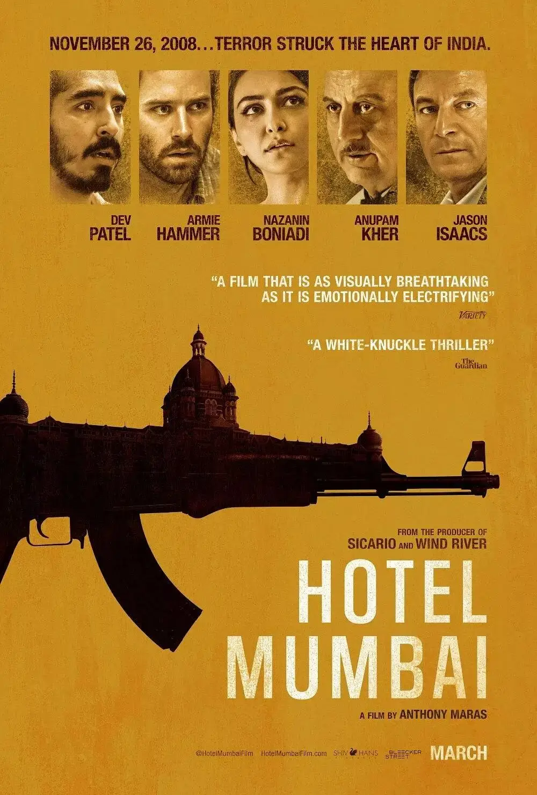
正文共计3700字左右
预计阅读时间6min
转载请在后台回复“授权”
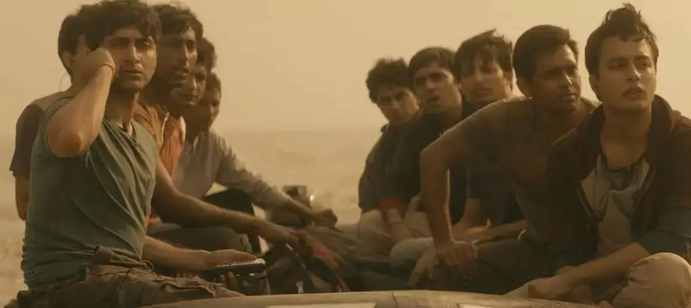
平静的湖面上，十个年轻人挤在一条小船上。
温暖的夕阳撒在他们的身上。
在这份美好中，他们用力感受着这个世界最后的暖意。
这个时候，电话那边的声音响起：
你感到强大
你感到平静
内心无所畏惧
望向你的兄弟们
就会在他们眼中看到我
我对你们都视如己出
我与你们同在
真主与你们同在
天堂在等待你们
真主是伟大的
他们呆呆地望向远方的城市。
所有人都明白，告别的时刻到了。
是时候要收起自己那副稚气未脱的脸庞。
是时候要彻底告别家人和自己的生命。
是时候要为了真主去打那场圣战。
兴奋中夹着恐惧，荣耀中埋藏着仇恨。
有人举手祈祷，祈求真主赐下面对死亡和恐惧的勇气。
当小船靠岸后，他们背着装满弹药的包混入人流，冲向医院、火车站、豪华酒店，表情冷血凝重.......
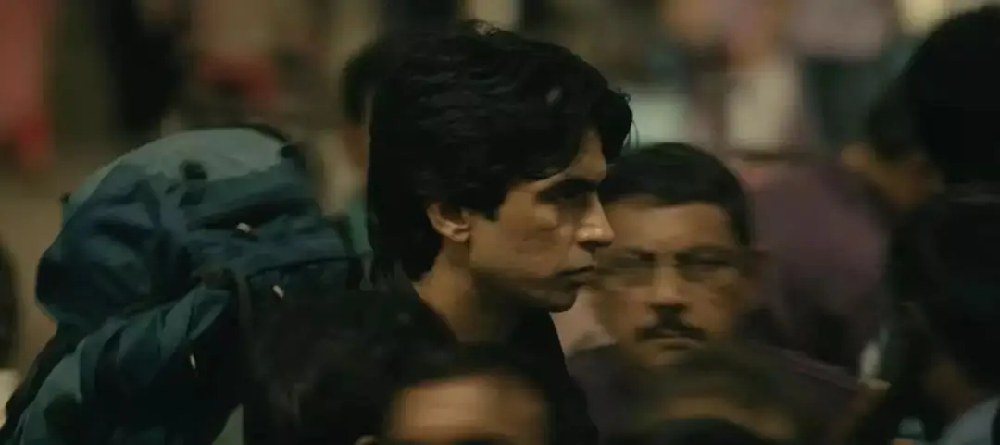
这是最近大受好评的印度电影《孟买酒店》的开头。
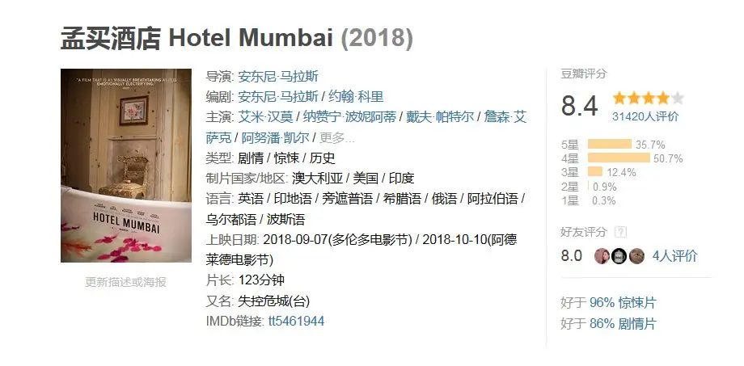
电影根据2008年印度“911”真实改编，那一夜是印度孟买最恐怖的一夜。
恐怖分子端着AK47在当地多处著名建筑对人群进行扫射，并随处投掷手榴弹。
这场袭击持续了近60个小时，最终导致195人死亡，295人受伤。
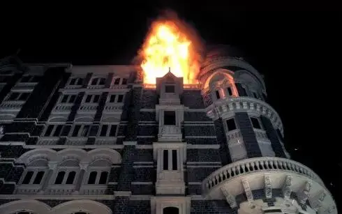
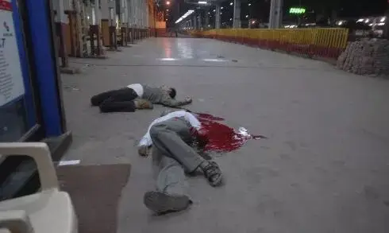
改编的电影主要聚焦于泰姬玛哈饭店所发生的故事。
泰姬玛哈饭店是印度最豪华的五星级大酒店，克林顿、希拉克、查尔斯王子、猫王等曾下榻，因此泰姬玛哈饭店被誉为“象征印度的自尊和财富的最佳酒店”。
自然，它也成为恐怖分子的重要目标。
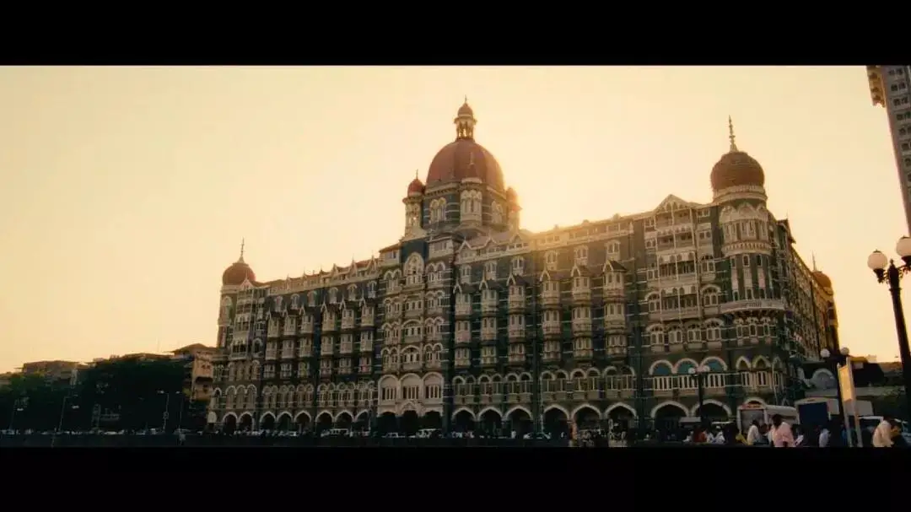
电影改编的节奏和氛围都非常出色。
电影从恐怖分子的视角开始，用十多分钟的时间便简明扼要地交代了几个主角的背景。
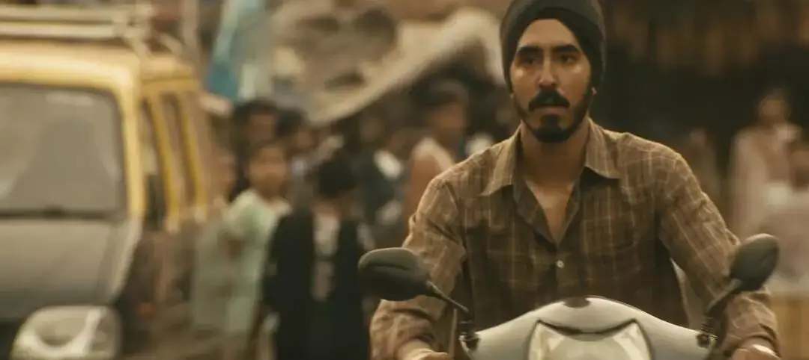
忽然，随着人群中的一声巨响便将观众的心提到了嗓子眼。
之后，这种恐惧会一直持续近两个小时，直至电影结束。
电影看下来，像是亲身经历了那场噩梦一般。
当恐怖分子初入酒店时，他们被眼前富丽堂皇的场景惊呆了，“看起来像天堂一样”。
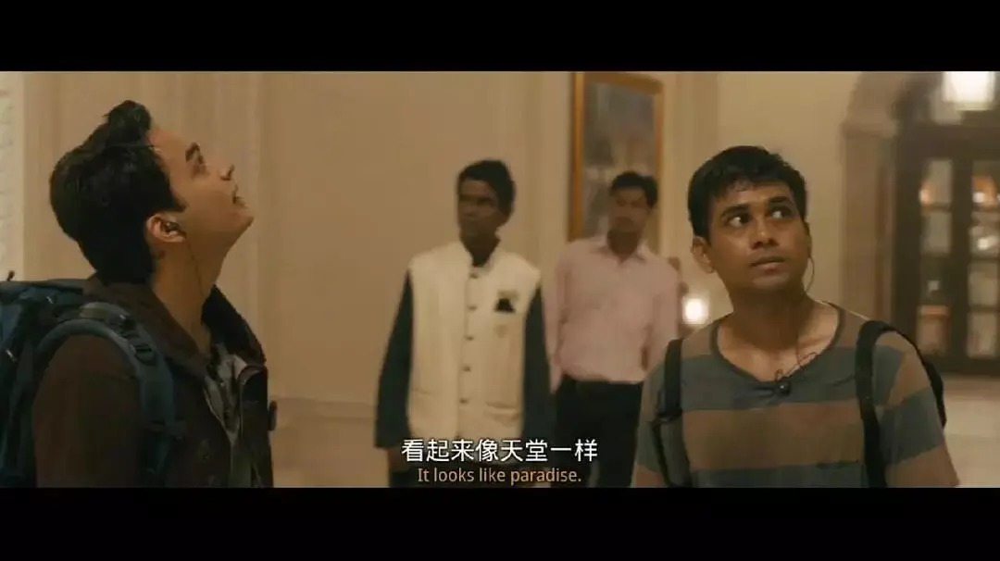
可没多久，他们便恢复“理智”，亲手用冲锋枪和手榴弹将天堂变成了地狱。
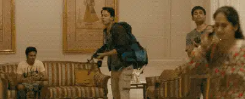
他们挨个房间进行搜查、屠戮，势要杀尽、杀绝，不留下任何一个活口。
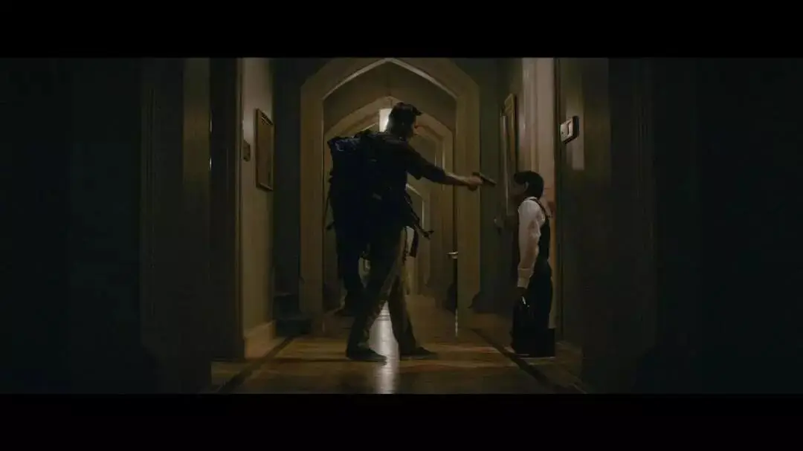
为了诱骗房间里的人开门，他们还冒充客服人员敲门，银幕之外的观众只能希望客人不要开门。
可剧中人并不知道外面的危险，纷纷打开了自己的房门，他们都来不及反应，便被恐怖分子一阵扫射。
就这样，观众和主人公只能眼睁睁地看着一个又一个人在自己面前倒下，到处都是哭喊，到处都是鲜血。
最后，留下的是死寂一般的恐怖。
生死境遇中，任何一个疏忽都会致人于死地。
一个人向外求助，慌乱中却透露了一大批人员藏在贵宾室，而新闻人员竟直接将信息播了出去。
恐怖分子的头目看到后，立马电话通知现场的手下对他们进行了追杀和扫射。
现实的惨剧就是在各种麻痹大意中铸成，观众除了咬牙，什么也做不了。
面对如此恐怖的袭击，孟买竟然没有武装力量可以与之抗衡，警察不作为，特种部队要从远处调来，至少要花两天的时间。
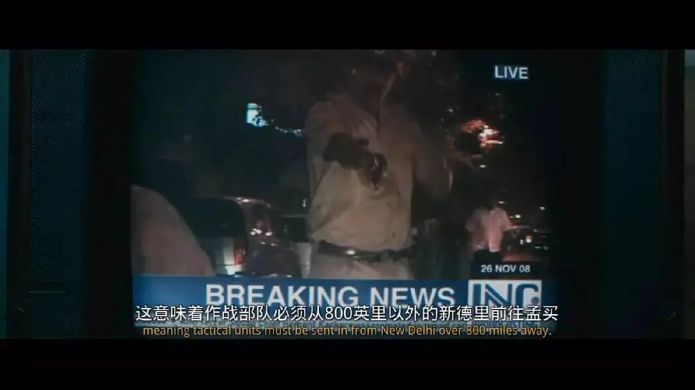
两天！48小时！恐怖分子要发射多少颗子弹，投掷多少手榴弹。
对于很多无助的受难者，这场等待过于漫长，近乎是一种折磨，明明有希望，却迟迟不来到，直到被恐怖分子发现、屠戮。
而生死之际，哪怕是小小的善举都会让人感动不已。
电影中的主人公来自于多个真实原型。
一个服务员在枪击发生后，第一时间想到的不是自己逃跑，而是很机智地立马关闭了餐厅的灯，并让客人躲在桌下，虽是小小的举动，却让不少人躲过了危险。
另一个工作人员则冒着生命危险带领两位警察来到监控室，为后来的逃生提供了很多线索。
而电影中的酒店主厨已经是印度家喻户晓的英雄，他当时表现的非常沉着冷静，在生死面前，仍然将顾客的生命放在自己之上。
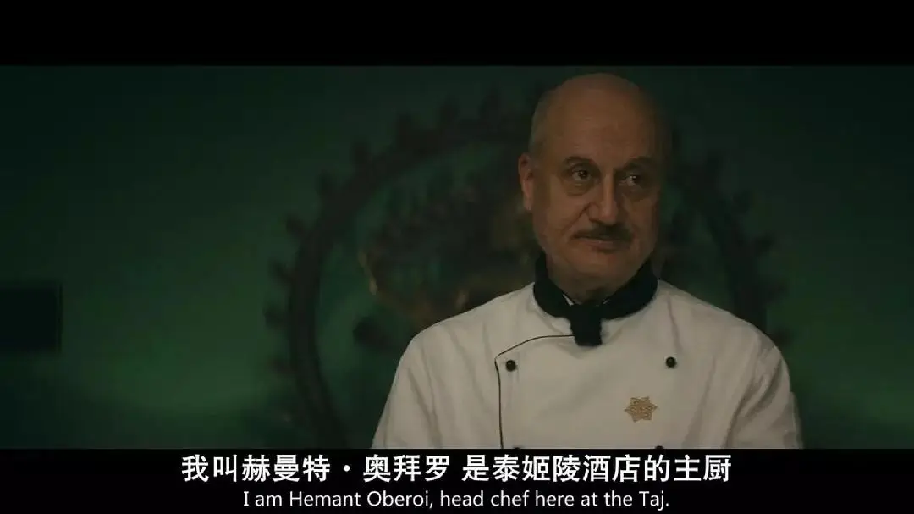
他曾安慰恐慌的顾客“大家不要惊慌，就算子弹来了，也会先穿过我们的胸膛”。
这句话一语成谶，在最后的逃生中，面对恐怖分子的扫射，很多工作人员用自己的身体挡着子弹帮助客人撤退。
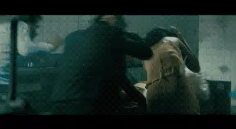
因此，在这场袭击中，伤亡人员有一半是酒店的工作员工。
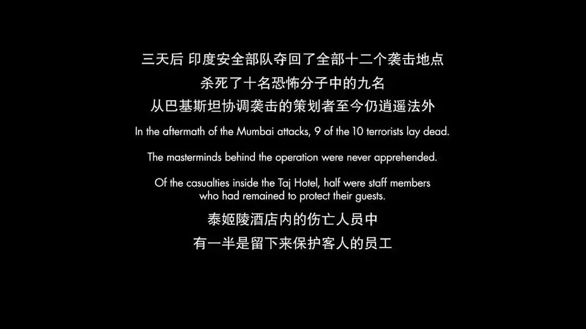
其中有一个保姆让人非常感动。
她一个人带着主人家的婴孩东躲西藏，却始终没有抛弃孩子。
要知道，当时的情形，带着这个孩子就是带了个定时炸弹，只需要孩子一声啼哭，她便会暴露在恐怖分子的面前。
她自己已经吓得要死，却一边控制着自己的恐慌，一边抚慰着婴孩。
最终，她和孩子活了下来，这简直是一场奇迹。
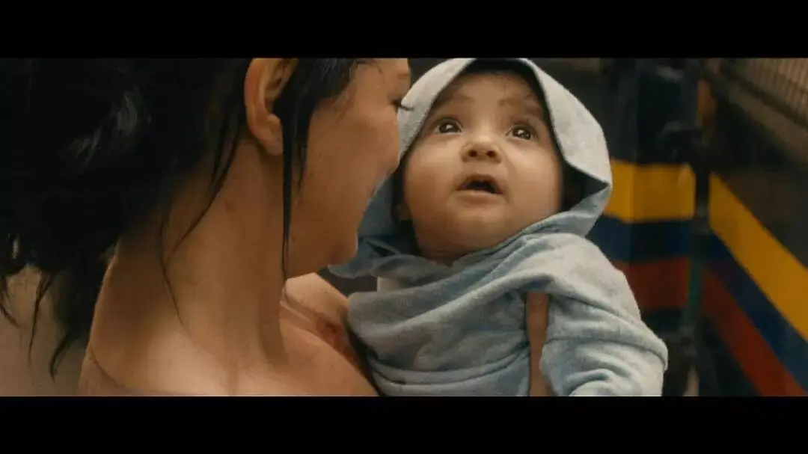
这种极端的处境中，人性的光辉会变得格外耀眼。
不过，另一方面，人性里的恶也会更加凸显。
在那些恐怖分子眼中，其他人根本就不是“人”，而是不洁净的畜生，是导致他们贫穷的根源，是真主安拉都要灭绝的魔鬼。
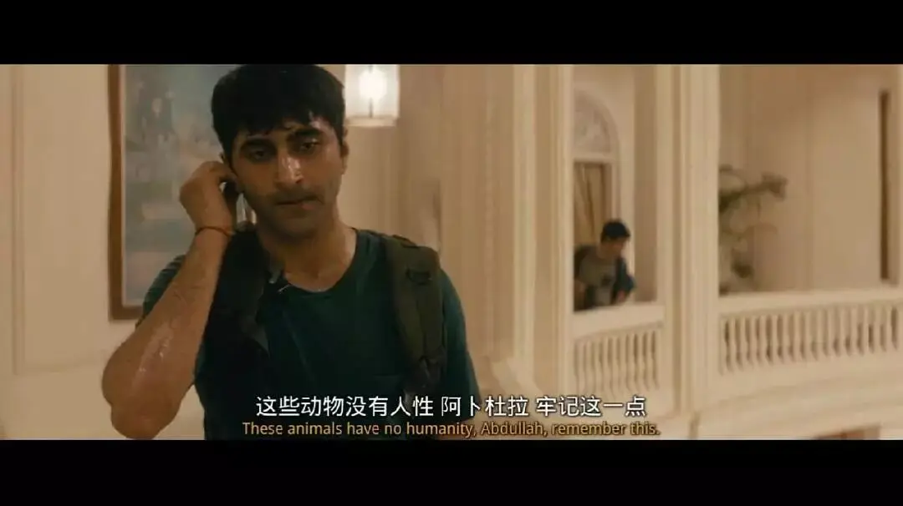
因此，对他们而言，孟买只是个巨大的屠宰场，他们要做的就是在死之前尽最大可能地杀戮。
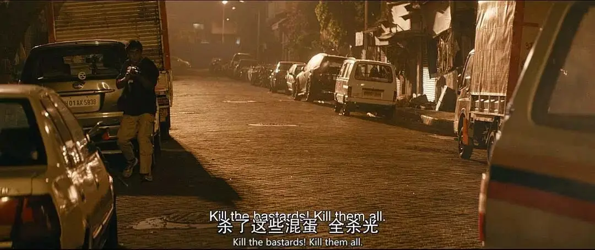
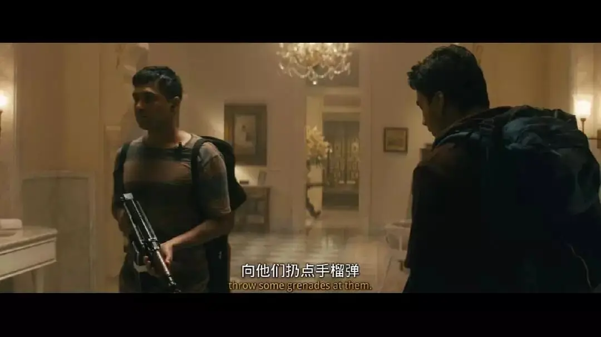
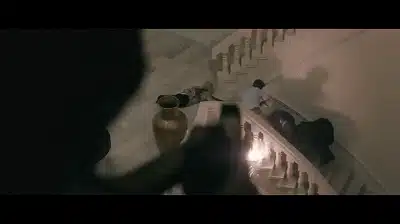
何以至此。
是什么能让一个人如此凶残，能“义无反顾”地爆头、斩首、割喉其他人。
答案是仇恨，是嫉妒，是血债，是人类的罪性。
在人类历史上，暴力的巅峰是战争。
战争的发生来自于不同人群之间难以调和的矛盾，或者因为贫富差距，或者因为宗教信仰，或者因为种族。
总之，各种因素下，在一群人的眼中，另一群人就变成了自己十恶不赦的仇人。
德国人眼中，犹太人就是恶心的猪猡。
赤农眼中，地主就是贪得无厌的吸血鬼。
小红兵眼中，资产阶级就等同于十恶不赦的日寇。
极端伊斯兰面前，其他人都是该被除灭的异教徒。
仇恨就是嗜血的魔鬼，不论是政治、经济还是信仰，只要沾上了它，就一定会见血。
所以这场恐怖袭击中，最恐怖的还不是那十个恐怖分子，而是电话那一头、从未露面、远程遥控、至今逍遥法外的头目。
他将贫穷归咎于其他人，他将仇恨架构在伊斯兰信仰的核心。
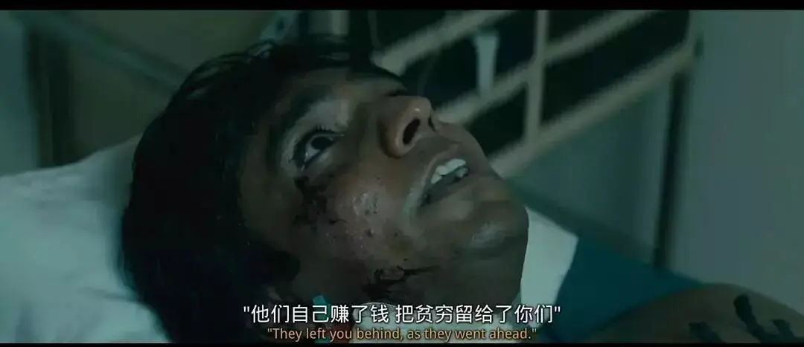
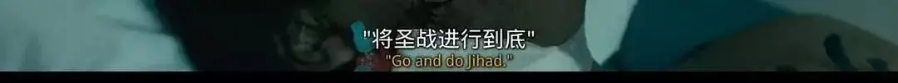
于是，那原本可以让人面对死亡、给人安宁的信仰却变成了让人甘心沦为人肉炸弹的幻想。
而爱的边界也被无限缩小，并因为仇恨建立起一道道与外部相隔绝的墙壁。
极端的恨里有极端的爱，极端的爱里也有着极端的恨。
他们可以为了给父母留一笔钱而走上绝路，但却不能容忍一个异教徒的存在。
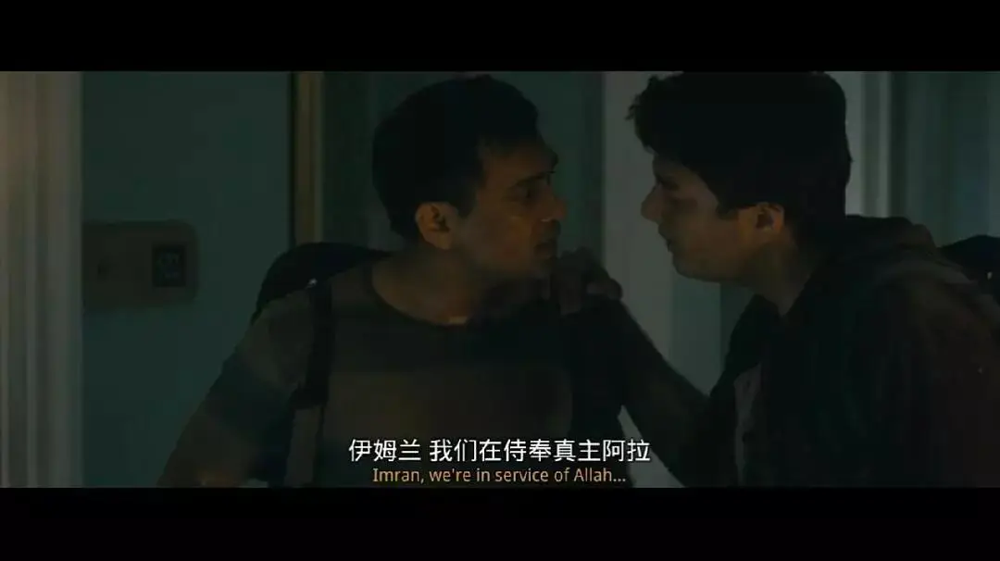
而这一切都是建立在封闭和谎言之上。
因此，对于那些恐怖分子而言，死亡根本不可怕，最可怕的是临死前发现了谎言。
电影中有一个恐怖分子，当他知道特种部队马上要来的时候，他知道自己的生命已经开始了倒计时。
他强忍着悲痛打给自己的家人，一边撒谎说自己在外面训练的很好，一边急着想要知道家人是否得到了那笔钱。
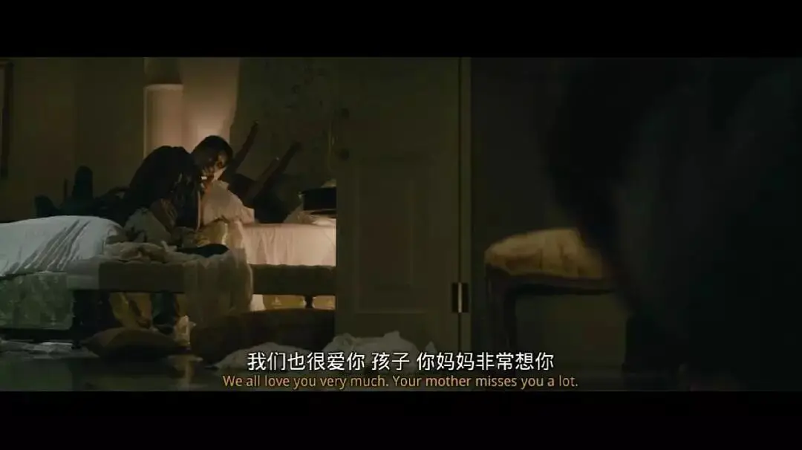
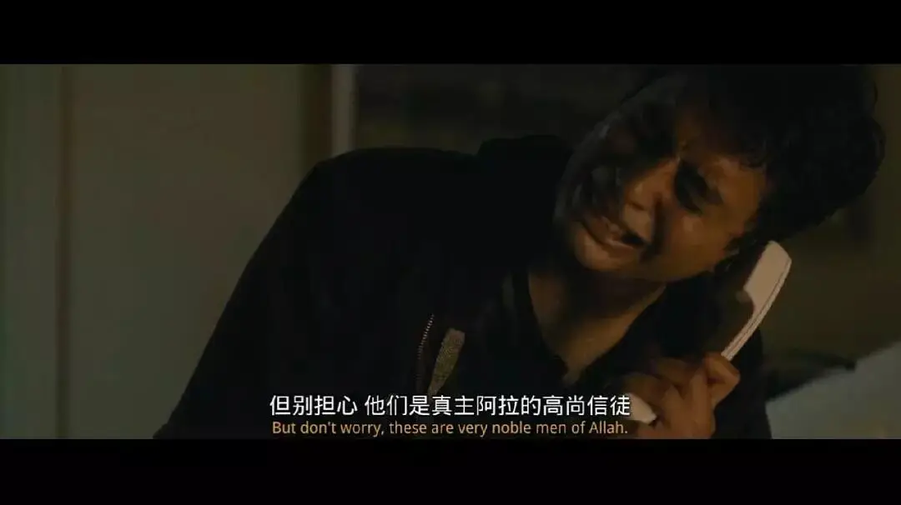
当家人告诉他并没有收到钱时，他是极度痛苦的，他对自己的头目产生了怀疑。
正当他为此痛苦不已的时候，头目命令他处死所有人质。
他头脑一片空白，像机器一样一枪又一枪地开枪。
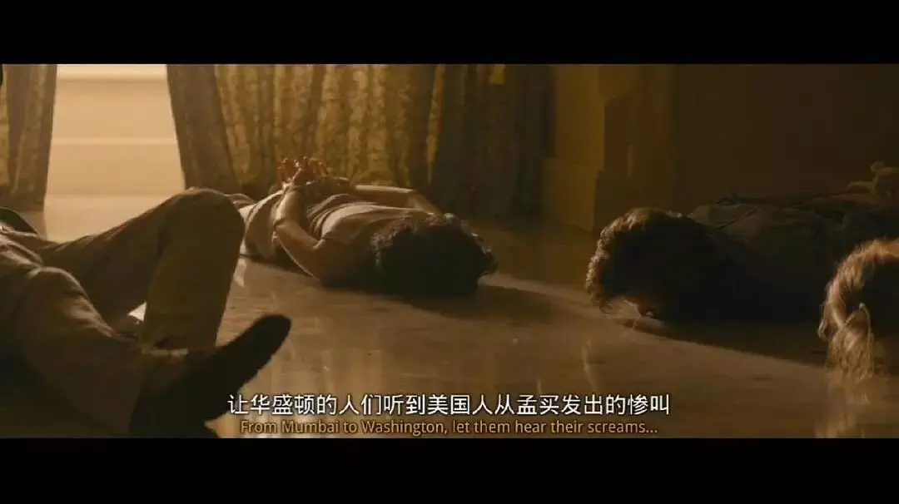
直到女主在绝望中反复诵读着《古兰经》的一句经文“除我以外，别我他神（安拉）”。
“巫婆！你怎么会知道这节经文.....你给我闭嘴，再不闭嘴我就杀了你”。
女主没有退缩，而是用眼睛直勾勾地望着他，并继续诵读着经文。
这几乎让他奔溃，他是以真主之名杀人，难道要杀死另一个称真主之名的人。
如果真是这样，那就是对自己信仰的背叛，那所谓的圣战根本就是毫无意义的杀戮。
而头目却在电话的那一头不停地催处着他动手。
他解释说，他们里面有个穆斯林。
而头目却告诉他“是穆斯林也没关系，专注于你的使命，干掉他”。
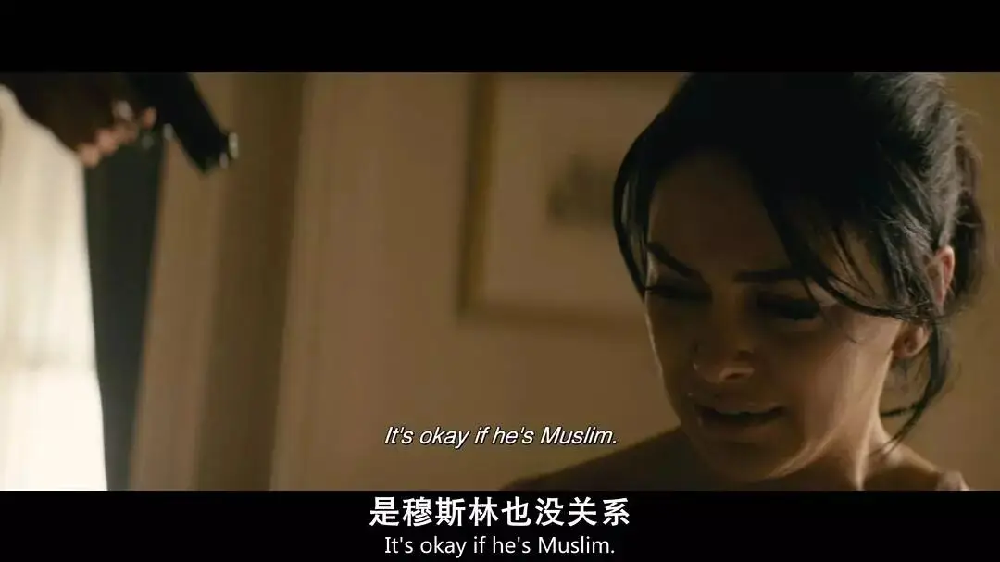
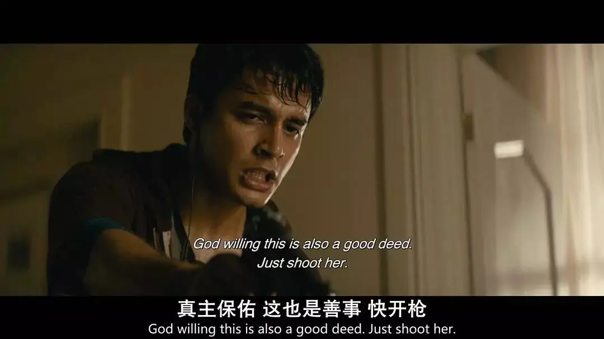
他泪流满面、手不停地颤抖，从一个冷血的恐怖分子忽然变成了一个绝望无助的小孩。
“她是个女人，她在做礼拜，她在做礼拜！”
他几近哀求地命令女主，“闭上眼睛....我要杀了你”。
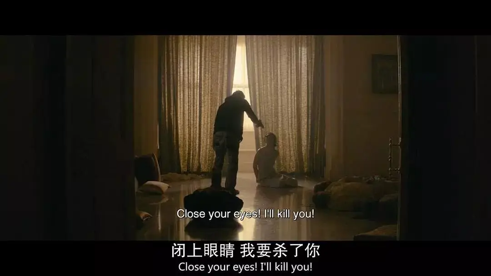
可女主依旧望着他。
终于，随着一声枪声，他下定了决心。
他的枪射向了别处，他放过了女主。
他的心里也已经缴械投降，他知道自己被骗了。
不仅忍受贫穷痛苦的家人得不到钱，所谓的以信仰之名教育自己的人原来根本就是个暴徒。
电影最后，当特种部队进入酒店后，他像是喝醉了酒一样，跌跌撞撞地走向警察的枪口。
他死的时候，身上没有任何武器，这是一场绝望的自杀。
而其他人却在谎言中，随着一声“真主万岁”，便灰飞烟灭。
这是一件多么可怕的事。
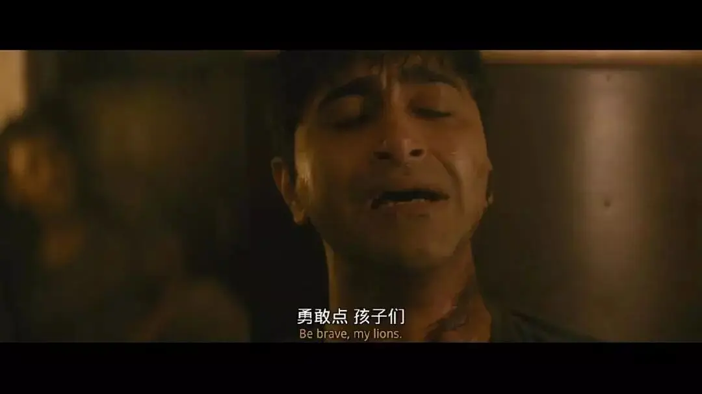
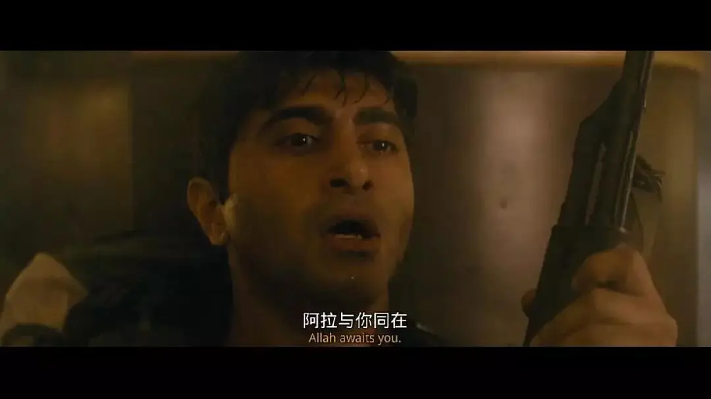
今天下午类似的悲剧再次发生，阿富汗首都发生恐怖爆炸，34人死亡，68人伤亡。
这背后又有着多么大的残忍、谎言和恐怖。
一个世俗的社会，大家会比较事故、物质，很多事情上不会太较真。
而一个信仰的国度，排他性就会强一些，一旦被仇恨利用，将更加恐怖。
因此，必须要有真信仰。
我们很难去判断一个信仰是否正确，但有一点是毋庸置疑的，真信仰不会令我们的良心不安，一定是充满了爱。
电影中的主角是一个虔诚的锡克教徒，作为信徒，他们必须要带一个长长的帽子。
这个帽子在他们眼中是非常神圣的，象征着荣誉和勇气。
所以，他们绝不会脱下这顶帽子。
可在这场恐怖袭击中，他的这顶帽子很容易让客人联想到恐怖分子。
他因为爱的缘故，真诚地向别人表明了自己的信仰，并告诉他，如果你真的觉得害怕，我可以为你将这顶帽子摘下来。
客人被他的真诚打动，并没有要求他那样做。
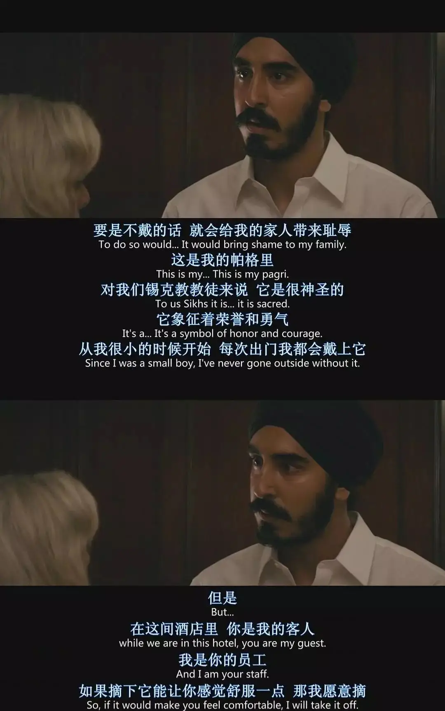
可最终，男主还是脱下了自己的帽子，用它去帮一个人止血。
这让我想起有人问耶稣，十诫中最大的一条是什么。
耶稣说，是爱神、爱人。
爱是律法中最大的诫命，如果没有爱，其他的东西都是虚假的，没有益处的。
如果男主角眼睁睁地看着一个人在自己面前流血致死而无动于衷，那帽子将不再荣耀，而是羞辱！
今日，爱和饶恕依然是这个世界上最缺乏的资源。
如果一个社会的爱需要门当户对时，那这个社会是冷漠和彼此隔阂的。
如果一个社会因为爱这群人而产生了对另一群人的仇恨，那这个社会是危险的。
爱，必须要有足够的深度和广度，能够打破彼此之间建立的“铜墙铁壁”。
对待穆斯林的态度也是一样，如果我们像恐怖分子那样对其他人心存偏见、仇恨，我们就是和他们一样的恐怖分子。
但，我们必须承认，我们没有爱他们的能力，甚至都没有尊重他们的能力。
我们的傲慢远超过我们能感受到的，我们能做的唯有认罪和仰望。
-END-
相关推荐
▼
（点击图片即可获取全文）
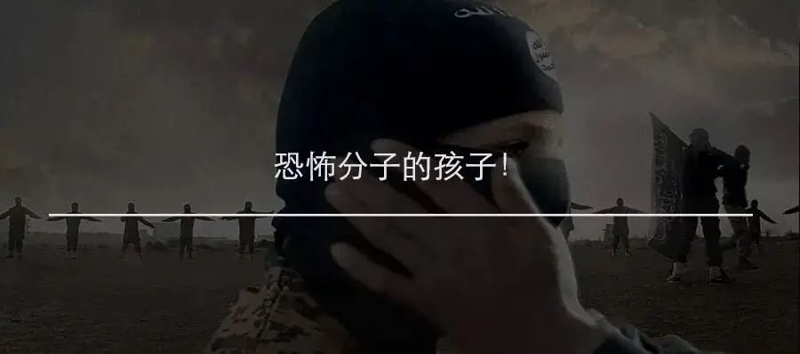
这里没有挑逗你眼目情欲的小鲜肉
也没有挑动你肉体情欲的段子
更没有膨胀你今生骄傲的鸡血
我们只在乎那些最质朴真诚的作品
在那里我们才能恢复真正的想象力
我们也坚信这才是我们真正需要的

ID:Six_hundred_hits
长按二维码，一键关注
【六百击】
电影评论
尽情分享朋友圈

微信二维码打赏通道